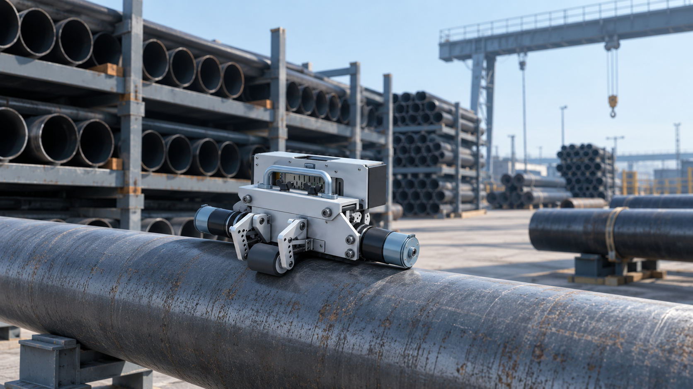
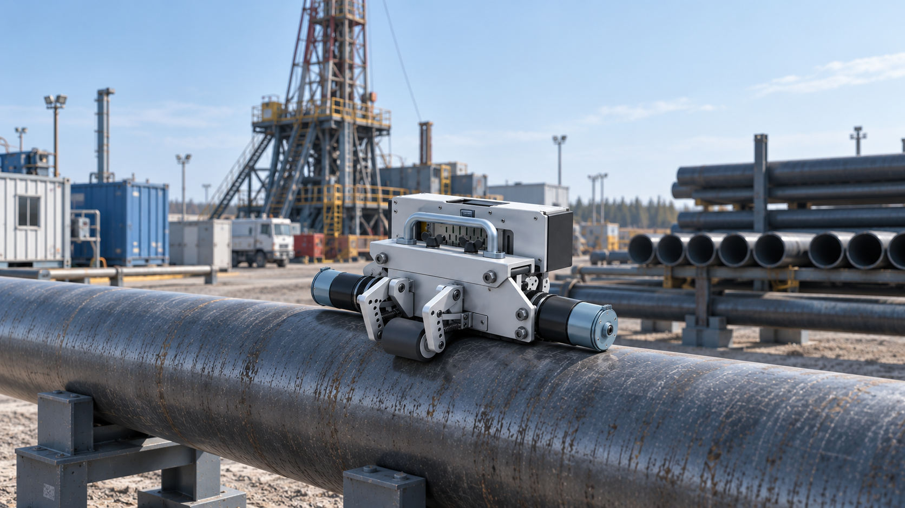
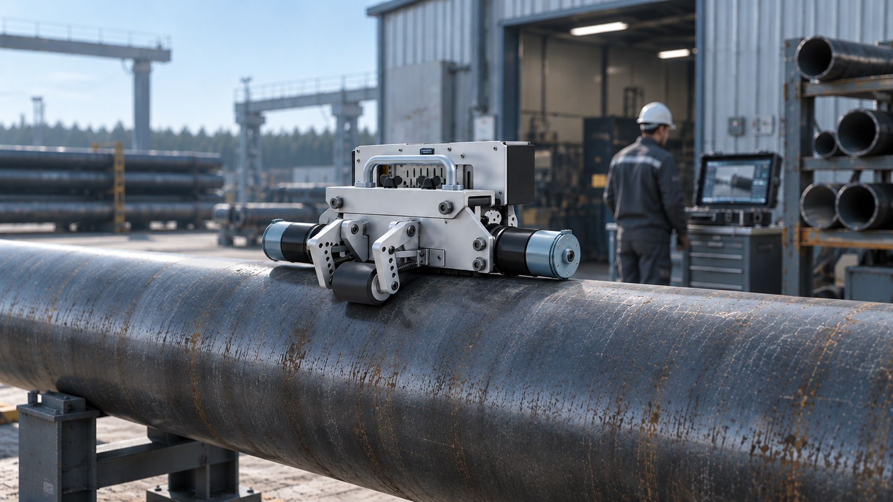
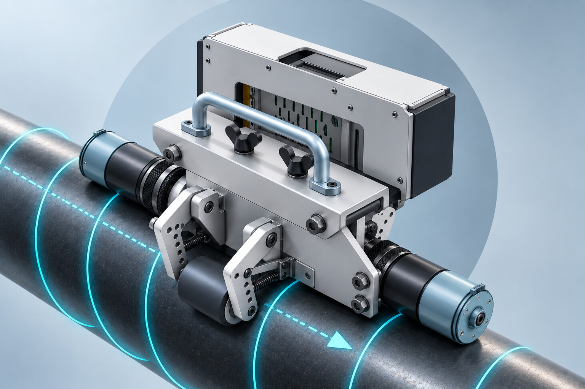
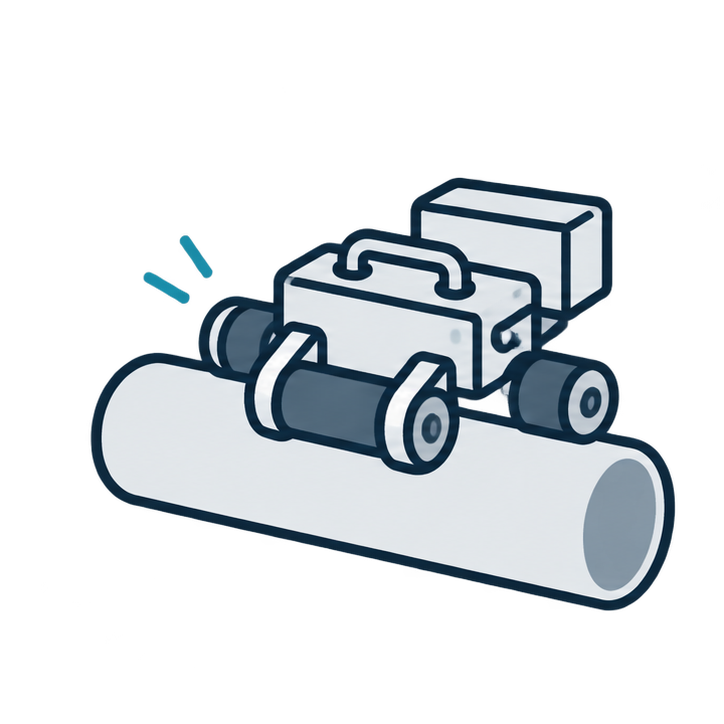
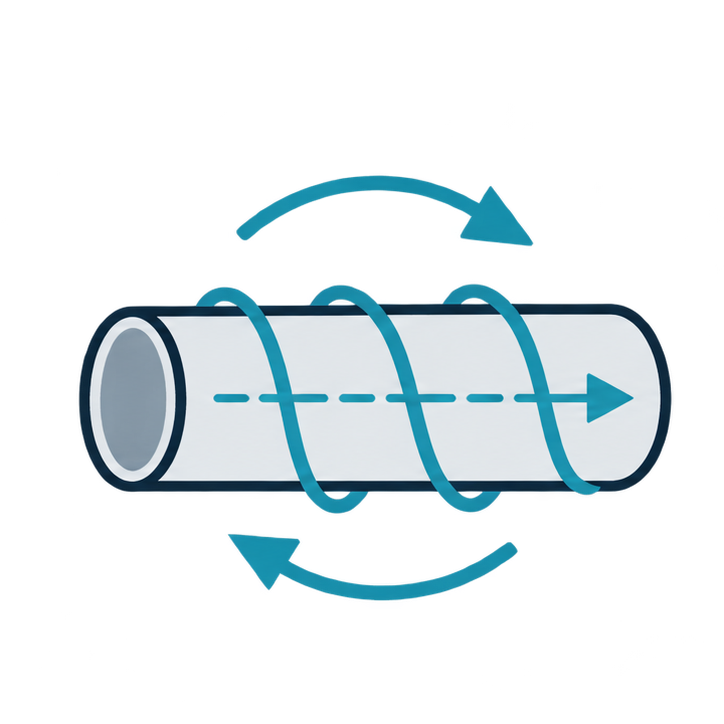
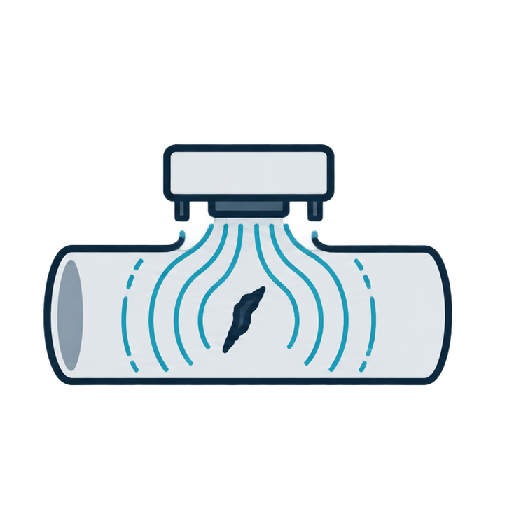
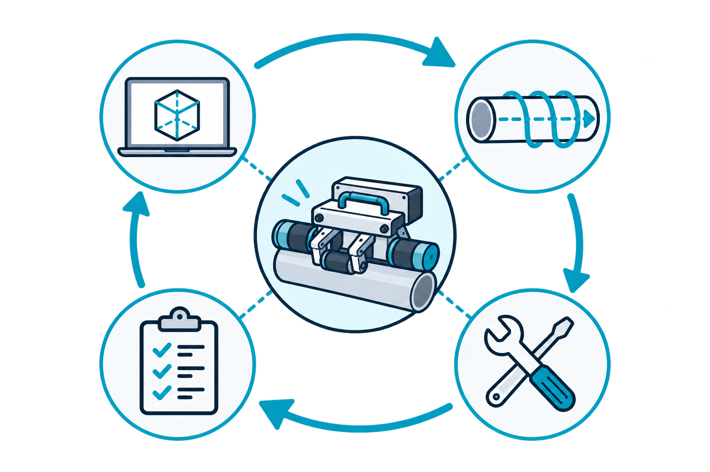

Автоматизированная диагностика труб
Мобильный робот
для контроля труб
Стадия: прототип
Разрабатываем автономного мобильного робота для наружного неразрушающего контроля стальных труб. Платформа удерживается на поверхности магнитными колёсами, движется по винтовой траектории и выполняет сканирование методом MFL.
Как работает робот- Трубы Ø60–168 мм
- Магнитная дефектоскопия MFL
- Винтовое сканирование
- Автономная работа
ООО «РОБОТЕХСКАН» · ПРОМЫШЛЕННАЯ РОБОТОТЕХНИКА

Задача
Наружный контроль
труб требует
автоматизации
Традиционный неразрушающий контроль труб во многих случаях требует непосредственного участия оператора или применения стационарного оборудования. Это снижает производительность диагностики и усложняет проведение контроля в полевых условиях. Проект направлен на автоматизацию наружного контроля труб с помощью мобильной роботизированной платформы.
-
01

Участие оператора
При ручном контроле специалист непосредственно перемещает диагностическое оборудование и контролирует процесс сканирования, что ограничивает производительность работ.
-
02

Сложность полного охвата
Для достоверной диагностики необходимо последовательно обследовать наружную поверхность трубы. При ручном контроле это требует повторяющихся перемещений и соблюдения траектории сканирования.
-
03

Полевые условия
Диагностика должна выполняться на трубных базах, ремонтных участках и объектах нефтегазовой отрасли, где применение крупногабаритных стационарных установок затруднено.
Сценарии применения
Автоматизированный
контроль труб
в полевых условиях
Мобильный робот предназначен для наружной экспресс-диагностики стальных труб непосредственно на объектах нефтегазовой отрасли. Автономная платформа перемещается по поверхности трубы, выполняет сканирование и позволяет локализовать участки с признаками дефектов.
-

01Трубные базы
Контроль технического состояния НКТ на площадках хранения и подготовки труб. Робот устанавливается на трубу и выполняет автоматизированное сканирование.
-

02Буровые площадки
Экспресс-диагностика труб непосредственно на объектах нефтегазодобычи без применения крупногабаритных стационарных установок.
-

03Ремонтные участки
Контроль труб на ремонтных площадках с последующей локализацией и маркировкой участков, требующих дополнительной проверки.
Продукт
Мобильный робот для
автоматизированного
контроля труб

-
01
Удержание и перемещение по трубе
Мобильная платформа удерживается на наружной поверхности трубы за счёт магнитных колёс и системы прижимных роликов.
-
02
Винтовое сканирование поверхности
Два независимых привода формируют винтовую траекторию движения, обеспечивая последовательный охват наружной поверхности контролируемого участка.
-
03
Магнитная диагностика и регистрация дефектов
Сканирующий модуль на основе магнитной системы и датчиков Холла предназначен для регистрации изменений магнитного поля в зоне дефектов трубы.
Конструкция объединяет автономную мобильную платформу, систему винтового перемещения и модуль магнитного неразрушающего контроля.
Текущая стадия проекта — разработка и испытание прототипа мобильного робота.Система
Система робота:
платформа, управление
и магнитная диагностика
В конструкции объединены мобильная платформа, электронная система управления и модуль магнитного неразрушающего контроля. Совместная работа узлов обеспечивает удержание на трубе, движение по винтовой траектории и регистрацию магнитных аномалий.
-

AМобильная платформа
Магнитные ведущие колёса и подпружиненные прижимные ролики обеспечивают устойчивое удержание и перемещение робота по наружной поверхности трубы.
-

BУправление винтовой траекторией
Независимое управление двумя приводами позволяет задавать скорость движения и формировать винтовую траекторию для последовательного охвата поверхности трубы.
-

CМагнитная диагностика
Модуль MFL регистрирует изменения магнитного поля в зоне дефектов и формирует данные для последующего анализа состояния трубы.
Разработка
Разработка
мобильного робота
по этапам
Второй этап проекта охватывает разработку конструкции мобильной платформы, реализацию винтового перемещения, сборку прототипа и проверку его ходовых характеристик. Завершающим элементом этапа является создание сайта стартап-проекта.

-
01
Разработка несущего каркаса
Проектирование конструкции мобильной платформы, размещение приводов, магнитных колёс и системы прижимных роликов.
-
02
Механизм винтового перемещения
Разработка механической и программной части, обеспечивающей движение робота вокруг трубы по винтовой траектории.
-
03
Сборка мобильного робота
Изготовление и объединение механических, приводных, электронных и диагностических узлов в единый прототип.
-
04
Ходовые испытания
Проверка устойчивости движения, удержания на трубе и работоспособности винтовой траектории на испытательных образцах.
-
05
Сайт стартап-проекта
Публичное представление продукта, принципа работы, результатов разработки и материалов проекта.